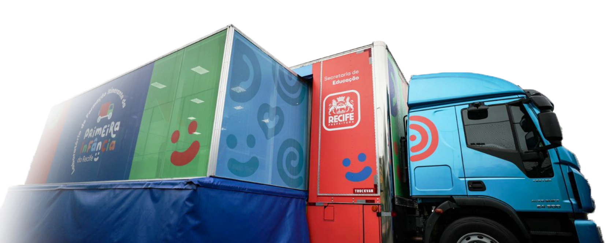

<section id="laboratories" class="mb-5">
  <div class="background-section">
    <div class="content-wrapper">

      <h2 class="heading-title text-uppercase text-end fs-2 pe-5 mt-3">
        Laboratórios <span class="highlighted-title">Itinerantes</span>
      </h2>

      <p class="description-text ps-5 text-justify mb-5 mx-3 mt-5">
        O objetivo dos caminhões é chegar com estas ações nas comunidades, nas escolas, nas creches, em praças e descentralizar o atendimento. A iniciativa reforça o compromisso da gestão com as novas gerações de recifenses, pois potencializa a capacitação técnica dos profissionais da área acerca de diversos temas relevantes, como: iniciação à leitura, alimentação saudável, fortalecimento de vínculos familiares, entre outros.
      </p>
    </div>

    <div class="truck-container">
      
    </div>
  </div>
</section>
